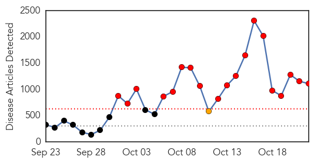
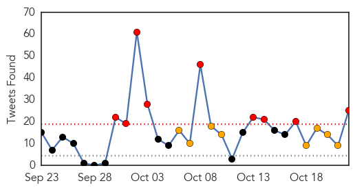
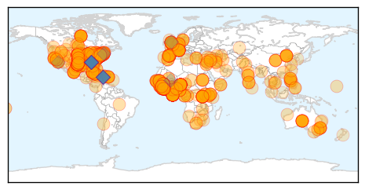

Ebola
30-Day Web Trend
19 alerts, 1 warnings

30-Day Twitter Trend
9 alerts, 8 warnings

Article Locations
Article Confidences
Top Articles:
- 1.000
- How Ebola Science Should Guide America's New Ebola Czar
- 1.000
- More than 23,000 Ebola Cases in 2014, According to Estimates
- 1.000
- The key to stopping Ebola in America is stopping it in West Africa
- 1.000
- U.S. Journalist Recovers; Ebola 'Czar' Gets to Work
- 1.000
- Ebola's true scale is a mystery
- 1.000
- Ebola Virus Forum at MSU
- 1.000
- US journalist recovers; Ebola ‘czar’ gets to work
- 1.000
- U.S. tightens Ebola monitoring for West African visitors
- 1.000
- Are we ready for Ebola?
- 1.000
- Senegal declared Ebola free by WHO
- 1.000
- CHRONOLOGY-Worst Ebola outbreak on record tests global response
- 1.000
- Ebola outbreak: A timeline of the worst epidemic of the virulent disease in history
- 1.000
- The Portland Press Herald / Maine Sunday Telegram
- 1.000
- U.S. Cameraman Treated for Ebola 'Free' of the Virus
- 1.000
- Ebola Nurse Amber Vinson Now 'Free' of Virus, Family Says
- 1.000
- Peninsula prepared for Ebola, but flu’s a bigger threat, health officer says -- Port Angeles Port Townsend Sequim Forks Jefferson County Clallam County Olympic Peninsula Daily news
- 1.000
- CDC will monitor West African travelers to U.S. for Ebola
- 1.000
- Quick Facts About Ebola
- 1.000
- Other Major Diseases Are Going Untreated In West Africa Because Of Ebola
- 1.000
- Ebola Riot In S. Leone Kills Two As WHO To Launch Vaccine Trials
- 1.000
- Texas nurse Nina Pham's dog, Bentley, tests negative for Ebola
- 1.000
- Latest Developments In The Ebola Story
- 1.000
- Ebola in the US: Passengers travelling from the worst hit countries in West Africa to enter US by five designated airports
- 1.000
- Ebola virus: Treatment made from blood of survivors could be available within two weeks
- 1.000
- The Stigma Surrounding Ebola is as Deadly as the Disease
- 1.000
- Lessons from Ebola - Trust: the Necessary Public Health Tool
- 1.000
- Travelers from W. Africa to Be Monitored for Ebola; CDC Crafts New Guidelines to Protect Health Workers
- 1.000
- Anyone Entering US From West Africa to Be Monitored
- 1.000
- Chronology: Worst Ebola outbreak on record tests global response
- 1.000
- Ebola Risk to Schools Low, Experts Say
- 1.000
- Rwanda imposes conditions on travellers from AMERICA to keep Ebola out
- 1.000
- Rwanda imposes conditions on travellers from AMERICA to keep Ebola out
- 1.000
- Champaign-Urbana medical and safety services take caution of Ebola
- 1.000
- Second Dallas hospital worker tests positive for Ebola
- 1.000
- US journalist treated for Ebola leaves Nebraska hospital
- 1.000
- The latest on the Ebola crisis
- 1.000
- Ebola: WHO emergency team holds talks on travel curbs
- 1.000
- Ebola: WHO emergency team holds talks on travel curbs
- 1.000
- USAMRIID supports Ebola Virus Disease outbreak response in West Africa
- 1.000
- Ebola to take four months to contain – Red Cross
- 1.000
- Latest Developments In The Ebola Story
- 1.000
- Federal and Local Governments Respond to Ebola Threat
- 1.000
- Monitoring against Ebola, MERS-CoV remains tight
- 1.000
- US Journalist Recovers; President Obama’s Ebola ‘Czar’ Gets To Work « CBS San Francisco
- 1.000
- Emergency Team Supporting Health Workers on Ebola Front Lines - Liberia
- 1.000
- US journalist recovers; Ebola 'czar' gets to work
- 1.000
- Radnor police will be prepared for unlikely Ebola outbreak
- 1.000
- Testing Shows Spanish Nurse’s Aide Free Of Ebola, Madrid Hospital Says
- 1.000
- Nearly 10,000 people infected with Ebola virus
- 1.000
- A comprehensive guide to the Ebola virus
Showing top 50 articles...
Top Tweets:
- 0.997
- Sommet-Alba a offert l’opportunité à la région de discuter ds formules pour prévenir le virus EBOLA! prévenirvautmieuxqueguerir
- 0.994
- Tous les dirigeants ont accepté d’élaborer un plan régional contre l’EBOLA.
- 0.958
- Sommet-Alba: le plan d’Haïti contre l’Ebola répond aux préoccupations de l’Alba
- 0.955
- dit que le voyage a été fructeux! EBOLA
- 0.932
- Studies show corpses very contagious for weeks potentially months because Ebola virus can survive.
- 0.911
- RT: Retour en Haiti après ma participation au sommet extraordinaire des Chef d'Etat et de Gouvern. de l'ALBA sur l'Ebola …
- 0.907
- There have been no reports of pets becoming sick with Ebola or of playing a role in transmission of Ebola to humans.
- 0.857
- 443 health-care workers have been infected with Ebola; 244 have died. Infections may be happening at home or in community suggests.
- 0.848
- have shown the ability to become infected with & spread Ebola virus. (Miscounted! 3/4)
- 0.807
- RT: Ebola is a Country (5) >> Kofi Annan is "bitterly disappointed" with the global response to Ebola https://t.co/0z1Xrag…
- 0.804
- We can’t get to zero risk in U.S. until we stop the Ebola epidemic at its source in Liberia Sierra Leone & Guinea.
- 0.801
- RT: J'interviens actuellement au Sommet extraordinaire des Chefs d'Etat et de Gouvernement de l'ALBA sur l'Ebola http://t…
- 0.791
- Hello everyone Let's all continue to pray for all the Ebola affected regions in West Africa. Lets pray for Africa as a continent. Amen!
- 0.782
- RT: We can’t get to zero risk in U.S. until we stop the Ebola epidemic at its source in Liberia Sierra Leone & Guinea.
- 0.782
- RT: We can’t get to zero risk in U.S. until we stop the Ebola epidemic at its source in Liberia Sierra Leone & Guinea.
- 0.715
- A 1:10 dilution of bleach will kill Ebola. EPA-approved disinfectant for non-enveloped viruses will kill Ebola. Check labels.
- 0.694
- Ebola crisis numbers 22 Oct. 2014. endebolanow ebola SierraLeone guinea liberia senegal nigeria spain usa http://t.co/uAloG88d1Q
- 0.680
- Currently there has been no report of dog to human transmission or showing symptoms of Ebola
- 0.680
- Currently there has been no report of dog to human transmission or showing symptoms of Ebola
- 0.680
- Currently there has been no report of dog to human transmission or showing symptoms of Ebola (4/4)
- 0.647
- Un protocole d’accord a été adopté par les chefs d’États des pays participant à ce sommet! EBOLA
- 0.633
- Ebola Outbreak Erodes Recent Advances in West Africa http://t.co/F9Cg2Wqrrl
- 0.573
- RT: Monrovia alone had 305 new Ebola cases this week according to! Those 7 days alone would be the fourth biggest outbreak ev…
- 0.515
- RT: Why was a nurse w/ Ebola allowed to travel? Is it safe to fly? How long does Ebola live on surfaces? Get answers: http://t.…
- 0.515
- RT: Why was a nurse w/ Ebola allowed to travel? Is it safe to fly? How long does Ebola live on surfaces? Get answers: http://t.…
Dengue Fever
30-Day Web Trend
1 alerts, 0 warnings

30-Day Twitter Trend
4 alerts, 0 warnings

Article Locations

Article Confidences

Top Articles:
- 0.998
- Kissing Bugs Bring Dangerous Disease to the U.S.
- 0.995
- 300,000 people in U.S. have Chagas disease as country unsure how to deal with growing threat - Live Trading News
- 0.995
- No Confirmed Cases of Chik-V in Belize…Not Yet!
- 0.973
- 30 dengue cases detected, 1 dead
- 0.966
- Escambia County reports 3rd West Nile virus case, Florida tops 300 chikungunya cases
- 0.966
- Dengue fever spreading near Arizona border
- 0.944
- Dengue patient dies in Rawalpindi
- 0.942
- Dengue cases soar to 4,379 in Odisha
- 0.870
- Another 51 dengue patients reach hospitals - Pakistan
- 0.730
- JADCO Issues Warning to Athletes Regarding Chik-V Medications
- 0.657
- 35-year-old man dies of dengue
Top Tweets:
-
No tweets found for Oct 22, 2014